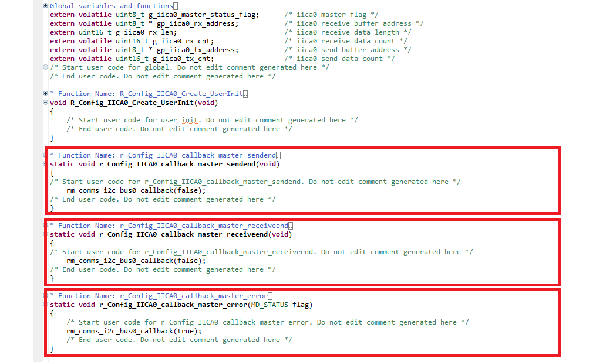
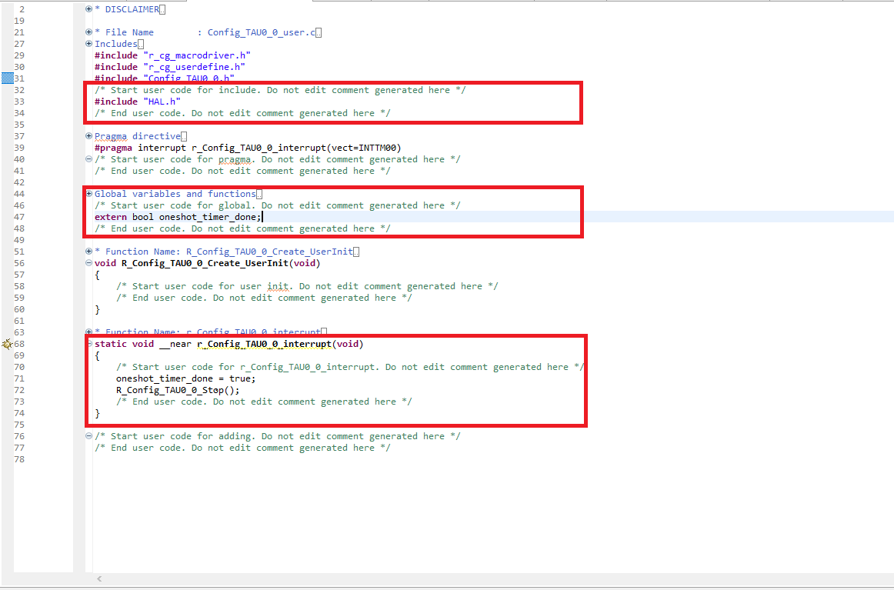
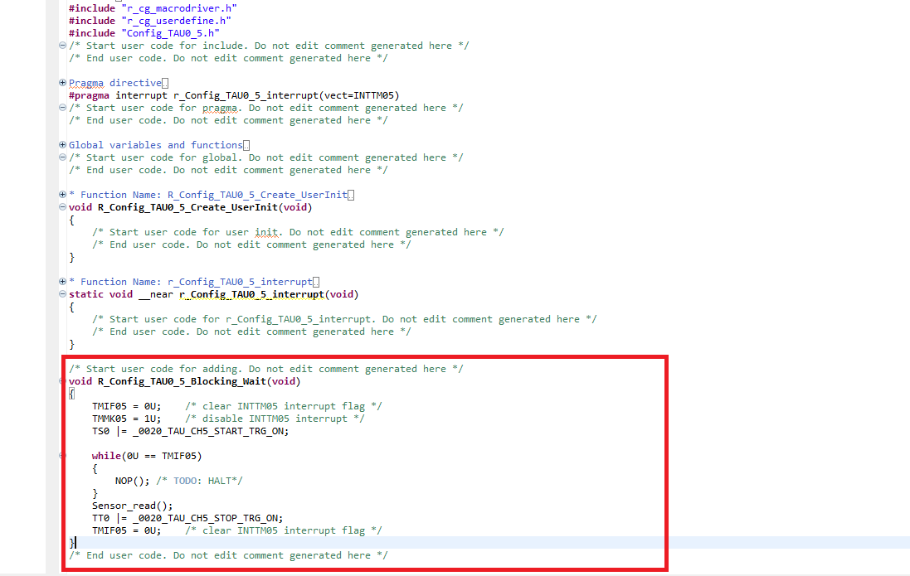

Here we will guide you through both inclusion and understanding of the code for this project. The aim is to give an understanding of how to use smart configurator generated code, the e² studio build settings & finally what the lab code does.
3.1 Pull In The Free Code
First we have to pull in the free code provided for this lab that is the hs4001 sensor library & WiFi connection
. We call this free code as it serves a fixed purpose and is only here to facilitate the
training.
To acquire the free code please click here to download & extract
the contents of the .zip archive.
Please copy the folder "app" into the "src" folder in your e² studio project.

3.2 Edit the IICA0 Driver
The I2C base driver doesn't provide the appropriate functionality out of the box - so let's edit it and
give ourselves the functions we need, this is namely an I2C send function which triggers when there's a error or event completion flag.
Navigate to [src] → [smc_gen] → [Config_IICA0] → Config_IICA0_user.c
You can edit the file in section starting with the "Start user code for function..." comment gaurd - place the following
function declarations.
Function: r_Config_IICA0_callback_master_sendend
rm_comms_i2c_bus0_callback(false);
Function: r_Config_IICA0_callback_master_receiveend
rm_comms_i2c_bus0_callback(false);
Function: r_Config_IICA0_callback_master_error
rm_comms_i2c_bus0_callback(true);
Which should look like this:
3.3 Populate TAU00 ISR
The clockwise timer counter needs it's ISR populating - this ISR fires everytime timer runs out to make sure the UART connection with DA16200 functions timely. We fill this ISR with some code so the
application can be made aware of a clockwise rotation.
Now first we need to include our "main.h" file from earlier to enable the ISR to communicate with the
application.
Navigate to the [src] → [smc_gen] → [Config_TAU0_0] → Config_TAU0_0_user.c &
copy the code below into the includes section of the file, inside the "Start user code for include..."
comment gaurd.
#include "HAL.h"Then add the following the global variable declaration section
extern bool oneshot_timer_done;
Finally inside the r_Config_TAU0_0_interrupt isr, please place the following code. This code signals to the application that the timer ran out. It also clears the interrupt flags both timers as a debounce precaution. It should be placed within the "Start user code for r_Config_TAU0_0_interrupt..." comment gaurd.
oneshot_timer_done = true;
R_Config_TAU0_0_Stop();
The changes should look like this when finished:
3.4 Populate TAU05 ISR
The sensor counter needs it's ISR populating - this ISR fires every milisecond to make sure the the steps of reading sensor value is initated. We fill this ISR with some code so the
application functions properly.
Now first we need to include our function in the header file.
Navigate to the [src] → [smc_gen] → [Config_TAU0_5] → Config_TAU0_5.h &
copy the code below at the end of the file, inside the "Start user code for function..."
comment gaurd.
void R_Config_TAU0_5_Blocking_Wait(void);Next navigate to the corresponding Config_TAU0_4_user.c file ([src] → [smc_gen] → [Config_TAU0_5] → Config_TAU0_5_user.c) and please add the following code at the bottom of the file, again within the comment gaurd "Start user code for adding...".
void R_Config_TAU0_5_Blocking_Wait(void)
{
TMIF05 = 0U; /* clear INTTM05 interrupt flag */
TMMK05 = 1U; /* disable INTTM05 interrupt */
TS0 |= _0020_TAU_CH5_START_TRG_ON;
while(0U == TMIF05)
{
NOP(); /* TODO: HALT*/
}
Sensor_read();
TT0 |= _0020_TAU_CH5_STOP_TRG_ON;
TMIF05 = 0U; /* clear INTTM05 interrupt flag */
}The changes should look like this when finished:
3.5 Pull In The Main Code
Now lets copy in the main code - this is running the application.
Simply replace the entire contents of your main source file src/<project_name>.c
with the code below.
#include "r_smc_entry.h"
#include "da16200_AT.h"
#include "http_server.h"
#include "sensor.h"
#include <string.h>
static uint8_t http_ip_port[500];
void main(void)
{
http_receive_status http_status;
EI();
wifi_init();
wifi_set();
Sensor_read();
while(1)
{
Sensor_read();
memset(http_ip_port, 0, 500);
http_status = HTTP_ERROR;
/* Wi-Fi server data receive */
http_status = http_server_receive(http_ip_port);
switch(http_status)
{
/* HTTP GET command received */
case HTTP_GET:
http_update(http_ip_port);
break;
/* LED BLINK command received */
case HTTP_LED_BLINK:
CCS0 ^= 0x01U;
break;
/* HTTP OTHER command received */
case HTTP_OTHERS:
http_update(http_ip_port);
break;
default:
break;
}
}
}3.10 Application Explained [Informative]
As the section name implies this in informative, there are no actions in this step and it can be freely
skipped. But this section aims to explain the application code and provide a clear understanding of why
& how certain things have been done. We will do this by combing through the code, picking out
lines of code or groups of lines of code in order to dissect what is happening.
The application is inherently simple once configured - the main loop infinitely waits for either a
button click or rotation event to be signalled from the hardware layer (ISR's).
These events are signalled through a variable hw_event_flags. The mechanism for setting and getting the
events is provided through simple bit manipulation.
Each bit is defined in an enumerated typedef to clearly define the events which can be stored in the
hardware event flags type hw_event_flags_t.
Setting and checking events has been simplified with macros in the application header defined.
The checking of this variable is done via copy during disabled interrupts to emulate a simplified
critical section.
The image below shows the flowchart for the top level main loop.
For each of the two events (button click and rotation) there is a handling process.
A button click invokes the tone generation and latches the LED CCIO current strength corresponding to
the system state.
The flowchart for executing this can be seen in the image below.

The rotation event simply invokes a system state change (output LED current strength & tone sequence
change) which is represented by simply writing a state number to the display. The new tone and LED CCIO
current strength can be output by clicking the button.
The flowchart for executing this can be seen in the image below.
An important part of the intialisation process is the ELCL settings. We are aiming to achieve the following circuit:

To do so there are 4 components when intialising the ELCL:
- Elcl_set_input: Select the input pins - this means the ELCL inputs 4 & 6 are linked to their
respecitve pins.
Elcl_set_input(&elcl_ctl, ELCL_INPUT_4, ELCL_SRC_PIN1_611_INTC5); Elcl_set_input(&elcl_ctl, ELCL_INPUT_6, ELCL_SRC_P51); - ELCL Block 1:
- Elcl_link_input: Link input pins to to block 1's link registers - this means our
input
pins on inputs 4 & 6 are now linked to block 1's link registers 2,0 & 6,1 respecitvely.
Elcl_link_input(&elcl_ctl, ELCL_BLOCK1, ELCL_LNK_2, ELCL_INPUT_REG_4, ELCL_INVERTED_LOGIC); Elcl_link_input(&elcl_ctl, ELCL_BLOCK1, ELCL_LNK_6, ELCL_INPUT_REG_6, ELCL_INVERTED_LOGIC); Elcl_link_input(&elcl_ctl, ELCL_BLOCK1, ELCL_LNK_0, ELCL_INPUT_REG_4, ELCL_INVERTED_LOGIC); Elcl_link_input(&elcl_ctl, ELCL_BLOCK1, ELCL_LNK_1, ELCL_INPUT_REG_6, ELCL_INVERTED_LOGIC); - Elcl_set_logic: Enable the logic gates of interest in logic block 1 - this means we
can
enable the flip lop and EXOR gate or direction detection and clock generation respectively.
Elcl_set_logic(&elcl_ctl, ELCL_BLOCK1, ELCL_ENABLE_FLIPFLOP0); Elcl_set_logic(&elcl_ctl, ELCL_BLOCK1, ELCL_EXOR_CELL_0); - Elcl_link_to_logic: Link the input link registers for block 1 to the logic cells
meaning
link registers 2,6 & 0,1 are now connected to the flip flop and exor gates respectively.
Elcl_link_to_logic(&elcl_ctl, ELCL_BLOCK1, ELCL_LNK_2, ELCL_FLIP_FLOP0_INPUT); Elcl_link_to_logic(&elcl_ctl, ELCL_BLOCK1, ELCL_LNK_6, ELCL_FLIP_FLOP0_CLK); Elcl_link_to_logic(&elcl_ctl, ELCL_BLOCK1, ELCL_LNK_0, ELCL_CELL0_INPUT_0); Elcl_link_to_logic(&elcl_ctl, ELCL_BLOCK1, ELCL_LNK_1, ELCL_CELL0_INPUT_1);
- Elcl_link_input: Link input pins to to block 1's link registers - this means our
input
pins on inputs 4 & 6 are now linked to block 1's link registers 2,0 & 6,1 respecitvely.
- ELCL Block 2:
- Elcl_link_input: Link outputs from block 1's logic gates to block 2.
Elcl_link_input(&elcl_ctl, ELCL_BLOCK2, ELCL_LNK_0, ELCL_OUTPUT_FLIP_FLOP0_L1, ELCL_INVERTED_LOGIC); Elcl_link_input(&elcl_ctl, ELCL_BLOCK2, ELCL_LNK_1, ELCL_OUTPUT_FLIP_FLOP0_L1, ELCL_POSITIVE_LOGIC); Elcl_link_input(&elcl_ctl, ELCL_BLOCK2, ELCL_LNK_2, ELCL_OUTPUT_CELL0_L1, ELCL_INVERTED_LOGIC); Elcl_link_input(&elcl_ctl, ELCL_BLOCK2, ELCL_LNK_3, ELCL_OUTPUT_CELL0_L1, ELCL_INVERTED_LOGIC); - Elcl_set_logic: Enable the logic gates of interest in logic block 2.
Elcl_set_logic(&elcl_ctl, ELCL_BLOCK2, ELCL_AND_CELL_0); Elcl_set_logic(&elcl_ctl, ELCL_BLOCK2, ELCL_AND_CELL_1); - Elcl_link_to_logic: Link the input link registers for block 2 to the logic cells.
Elcl_link_to_logic(&elcl_ctl, ELCL_BLOCK2, ELCL_LNK_0, ELCL_CELL0_INPUT_0); Elcl_link_to_logic(&elcl_ctl, ELCL_BLOCK2, ELCL_LNK_2, ELCL_CELL0_INPUT_1); Elcl_link_to_logic(&elcl_ctl, ELCL_BLOCK2, ELCL_LNK_1, ELCL_CELL1_INPUT_0); Elcl_link_to_logic(&elcl_ctl, ELCL_BLOCK2, ELCL_LNK_3, ELCL_CELL1_INPUT_1);
- Elcl_link_input: Link outputs from block 1's logic gates to block 2.
- Elcl_set_output & Elcl_set_output_state: Select the ELCL outputs & their
source's from
within the ELCL - then enable them.
Elcl_set_output(&elcl_ctl, ELCL_OUTPUT_3, ELCL_OUTPUT_L2_CELL0, ELCL_POSITIVE_LOGIC); Elcl_set_output(&elcl_ctl, ELCL_OUTPUT_4, ELCL_OUTPUT_L2_CELL1, ELCL_POSITIVE_LOGIC); Elcl_set_output_state(&elcl_ctl, ELCL_OUTPUT_3, ELCL_OUTPUT_ENABLED); Elcl_set_output_state(&elcl_ctl, ELCL_OUTPUT_4, ELCL_OUTPUT_ENABLED);